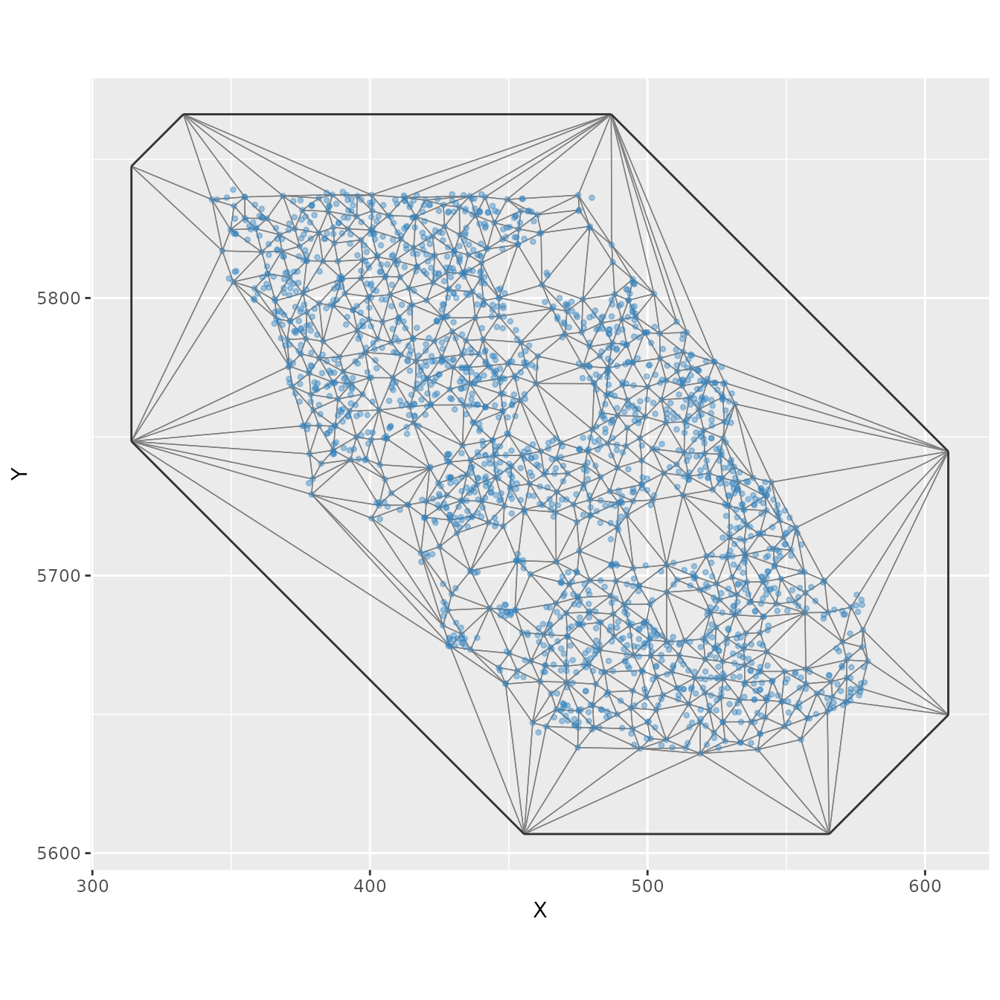
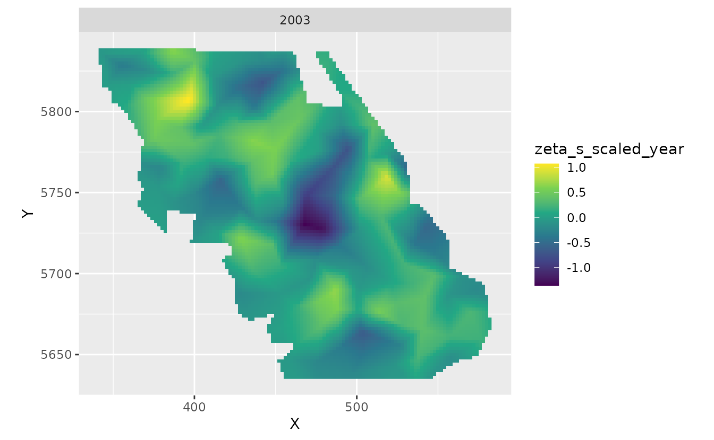
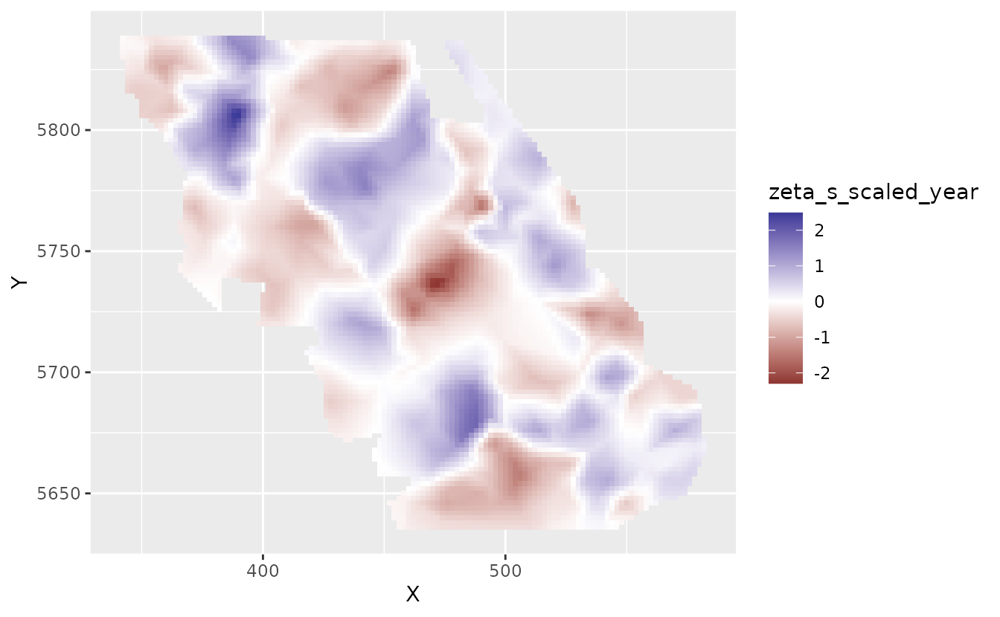
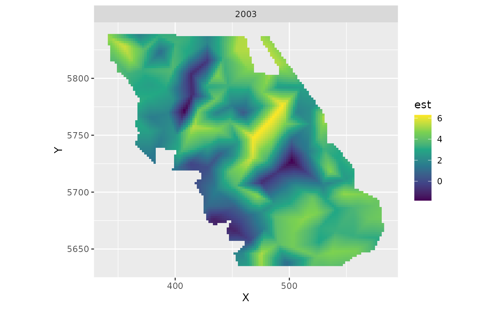
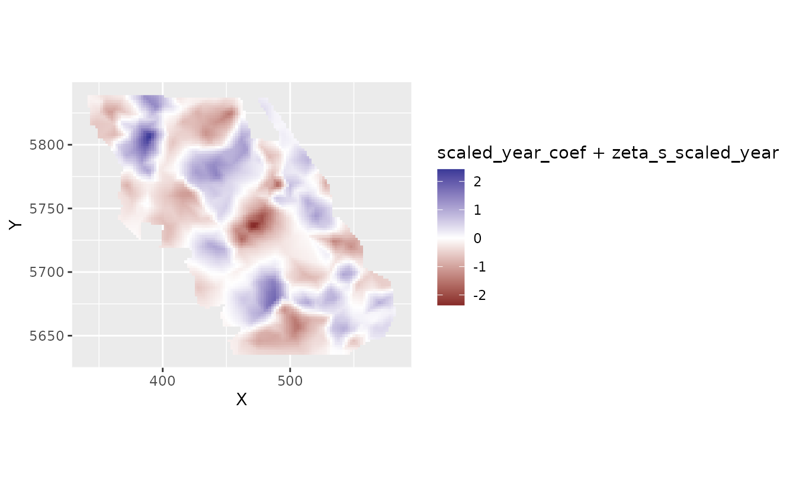

Fitting spatial trend models with sdmTMB
2023-03-08
Source:vignettes/web_only/spatial-trend-models.Rmd
spatial-trend-models.RmdIf the code in this vignette has not been evaluated, a rendered version is available on the documentation site under ‘Articles’.
Using the built-in British Columbia Queen Charlotte Sound Pacific Cod dataset, we might be interested in fitting a model that describes spatially varying trends through time. The data are as follows:
- There are columns for depth and depth squared.
- Depth was centred and scaled by its standard deviation and we’ve included those in the data frame so that they could be used to similarly scale the prediction grid.
- The density units should be kg/km2.
- Here, X and Y are coordinates in UTM zone 9.
We will set up our SPDE mesh with a relatively coarse resolution so that this vignette builds quickly:

We will fit a model that includes a slope for ‘year’, an intercept
spatial random field, and another random field for spatially varying
slopes the represent trends over time in space
(spatial_varying argument). Our model just estimates an
intercept and accounts for all other variation through the random
effects.
First, we will set up a column for time that is Normal(0, 1) to help with estimation:
Now fit a model using
spatial_varying ~ 0 + scaled_year:
(The 0 + drops the intercept, although sdmTMB would take
care of that anyways here.)
m1 <- sdmTMB(density ~ scaled_year, data = d,
mesh = pcod_spde, family = tweedie(link = "log"),
spatial_varying = ~ 0 + scaled_year, time = "year",
spatiotemporal = "off")
#> Warning in checkMatrixPackageVersion(): Package version inconsistency detected.
#> TMB was built with Matrix version 1.5.3
#> Current Matrix version is 1.5.1
#> Please re-install 'TMB' from source using install.packages('TMB', type = 'source') or ask CRAN for a binary version of 'TMB' matching CRAN's 'Matrix' packageWe have turned off spatiotemporal random fields for this example for
simplicity, but they also could be IID or
AR1.
Let’s extract some parameter estimates. Look for
sigma_Z:
tidy(m1, conf.int = TRUE)
#> # A tibble: 2 × 5
#> term estimate std.error conf.low conf.high
#> <chr> <dbl> <dbl> <dbl> <dbl>
#> 1 (Intercept) 2.85 0.346 2.17 3.52
#> 2 scaled_year -0.126 0.117 -0.356 0.104
tidy(m1, "ran_pars", conf.int = TRUE)
#> Standard errors intentionally omitted because they have been calculated in log
#> space.
#> # A tibble: 5 × 5
#> term estimate std.error conf.low conf.high
#> <chr> <dbl> <lgl> <dbl> <dbl>
#> 1 range 26.2 NA 18.2 37.8
#> 2 phi 14.1 NA 13.3 15.0
#> 3 sigma_O 2.13 NA 1.75 2.60
#> 4 sigma_Z 0.625 NA 0.459 0.850
#> 5 tweedie_p 1.59 NA 1.57 1.61Let’s look at the predictions and estimates of the spatially varying coefficients on a grid:
plot_map_raster <- function(dat, column = est) {
ggplot(dat, aes(X, Y, fill = {{ column }})) +
geom_raster() +
facet_wrap(~year) +
coord_fixed() +
scale_fill_viridis_c()
}First, we need to predict on a grid. We also need to add a column for
scaled_year to match the fitting:
nd <- replicate_df(qcs_grid, "year", unique(pcod$year))
nd$scaled_year <- (nd$year - mean(pcod$year)) / sd(pcod$year)
p1 <- predict(m1, newdata = nd)First let’s look at the spatial trends.
We will just pick out a single year to plot since they should all be
the same for the slopes. Note that these are in log space.
zeta_s are the spatially varying coefficients.
plot_map_raster(filter(p1, year == 2003), zeta_s_scaled_year)
This is the spatially varying intercept:
plot_map_raster(filter(p1, year == 2003), omega_s) + scale_fill_gradient2()
These are the predictions including all fixed and random effects plotted in log space.
plot_map_raster(filter(p1, year == 2003), est)
And we can look at just the spatiotemporal random effects for models 2 and 3 (intercept + slope combined):
plot_map_raster(filter(p1, year == 2003), est_rf)